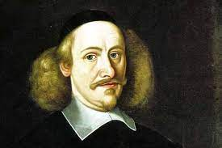
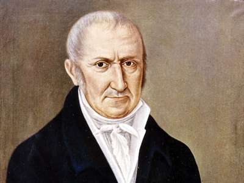
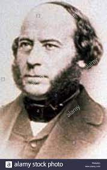
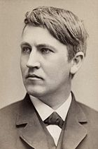

Przepływ ładunku elektrycznego, czyli prąd elektryczny, zaobserwował po raz pierwszy około 1663 roku, niemiecki uczony Otto von Guericke. Zauważył on, że ciało obojętne połączone struną metalową z ciałem naładowanym, zyskuje ładunek elektryczny.
Badania S. Graya doprowadziły w 1734 roku do stwierdzenia, że najlepszymi (spośród wówczas znanych) przewodnikami elektryczności są metale. Sam prąd elektryczny jako zjawisko nie był jednak w tych czasach badany.
Generatory elektrostatyczne pozwalały wprawdzie wytwarzać stosunkowo wysokie napięcie, jednakże prądy jakie uzyskiwano, były niezwykle słabe i krótkotrwałe.

Przełomowe znaczenie dla badań, miało wynalezienie ogniwa galwanicznego przez włoskiego fizyka Alessandro Volta w 1800 roku. Uczony ten zbudował też pierwszą baterię takich ogniw, nazwaną stosem Volty.
Doświadczenia z prądem elektrycznym doprowadziły wkrótce do odkrycia zjawiska indukcji elektromagnetycznej (Faraday - 1831 rok), co z kolei podsunęło pomysł wynalazku prądnicy.

Pierwszą prądnicę wirującą prądu zmiennego, skonstruował już w 1832 roku Francuz Hippolyte Pixii.
W 1866 roku inżynier niemiecki Werner Siemens wynalazł prądnicę samowzbudną tzw. dynamomaszynę, a w 1870 roku pracujący w Paryżu Belg Zénobe Gramme zbudował pierwszą prądnicę prądu stałego, tzw. dynamo.
Chociaż prąd elektryczny pod koniec XIX wieku był już dość szeroko wykorzystywany, to nie myślano jeszcze o upowszechnieniu energii elektrycznej na skalę masową. Potrzebę dostarczania prądu elektrycznego większej liczbie odbiorców stworzył wynalazek praktycznej żarówki elektrycznej. Jej wynalazca Thomas A. Edison

, był zarazem założycielem pierwszej publicznej elektrowni zbudowanej w Nowym Jorku w USA.
Uruchomiona przez niego w 1882 roku elektrownia, miała 6 prądnic prądu stałego, z których każda poruszana była silnikiem parowym o mocy 125 KM. Ta pierwsza elektrownia miejska zasilała prądem o napięciu 110 V sieć elektryczną, do której włączono 7200 żarówek.
Pierwsza duża elektrownia prądu zmiennego powstała w 1885 roku w Depford pod Londynem.
W 1891 roku zbudowano pierwszą elektrownię wodną w pobliżu Portland w stanie Oregon (St. Zjednoczone).
Pierwsza elektrownia atomowa została uruchomiona w 1954 roku w Obnińsku koło Kaługi (ZSRR).